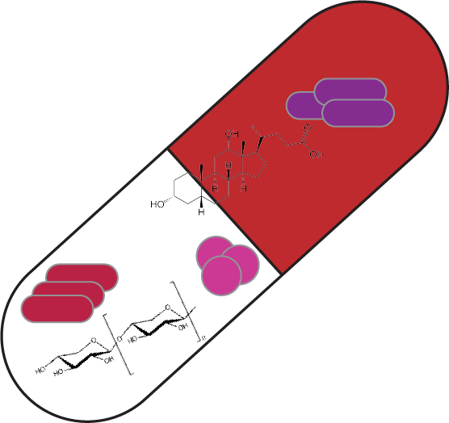
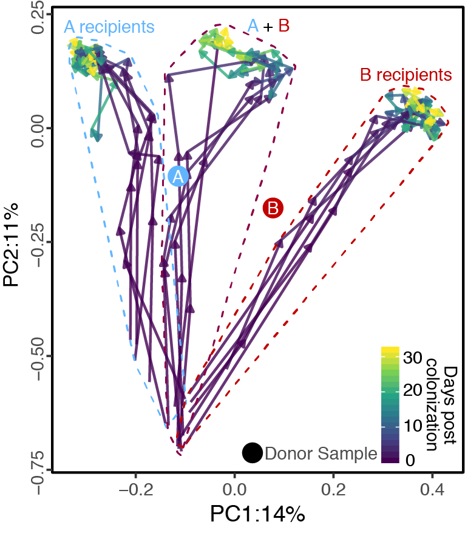
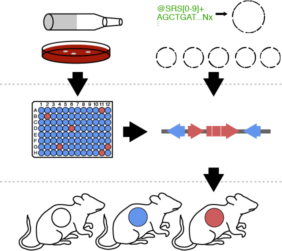

The microbiome may be considered a “hidden organ”; however, while all of our hearts have the same design and function, we each have our own unique microbiome that can change in as little as a day. There are few factors that influence gut microbiome composition more than diet. As such, there is a great opportunity to both help and hurt our microbiomes based on dietary practices. In particular, we are researching the effects of prolonged caloric restriction to understand how starving our microbes affects pathogen resistance and microbe-host interactions affecting metabolic health. The goal of these studies is to understand how diet-microbe-host interactions can be leveraged for human health and as a tool for disrupting microbial communities to study microbe-microbe interactions.

Fecal microbiota transplants (FMTs) are a powerful tool for microbiome manipulation; however, they are intrinsically undefined and variable given their dependency on human donors. Synthetic transplants are an attractive solution; however, the rules that govern the assembly and maintenance of high-diversity microbial communities are only beginning to be understood. We are working on solving these problems using a combination of big data analysis coupled with mechanistic wet-lab and gnotobiotic experiments to design and test synthetic microbiomes to tackle common conditions including recurrent C. difficile infection and bacterial vaginosis.

omprehensive tools for mechanistic experimentation are largely lacking for most of the taxa present in the human gut microbiota. We have previously shown the power of generating strain-collections to uncover novel effectors of host-microbe and drug-microbe relationships in E. lenta (Bisanz et al. Cell Host & Microbe 2020); however, similar resources are largely lacking for many keystone gut species. Two members of the same species generally share only a fraction of their genome meaning that they exhibit a great variety of variability in their metabolic functions which allows us to quickly pair function to its genetic determinants. We are working to improve our understanding of the genotypic and phenotypic variation among human-associated species to both understand diversity, and use it as a tool in our research.